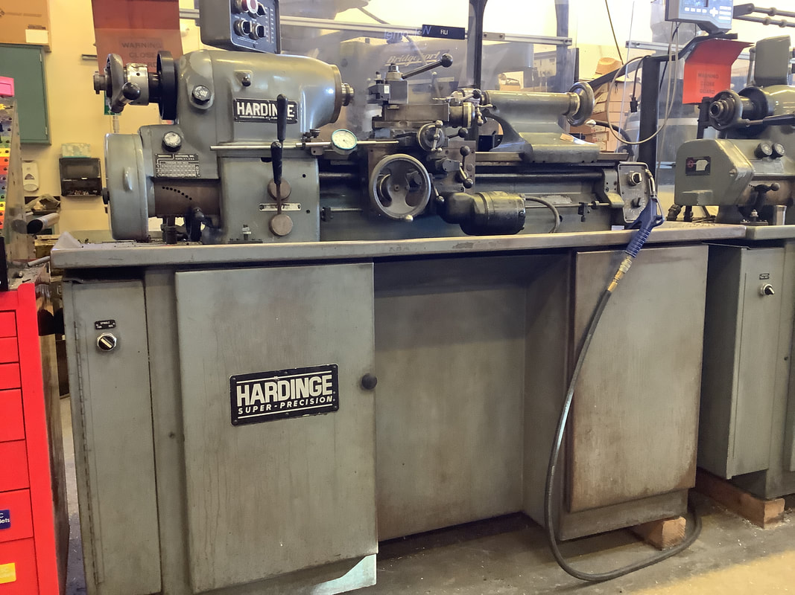
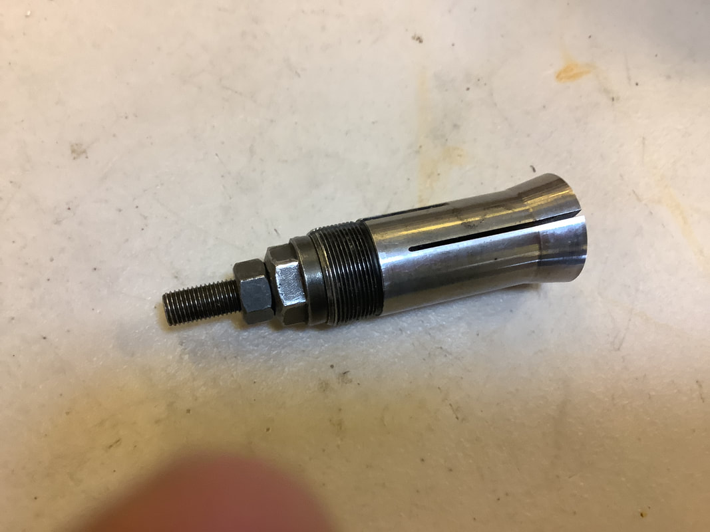
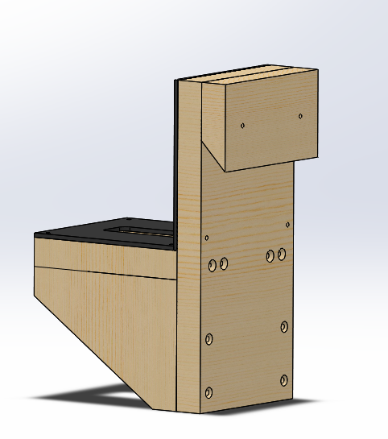
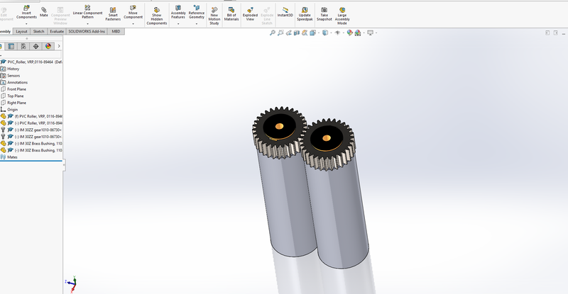
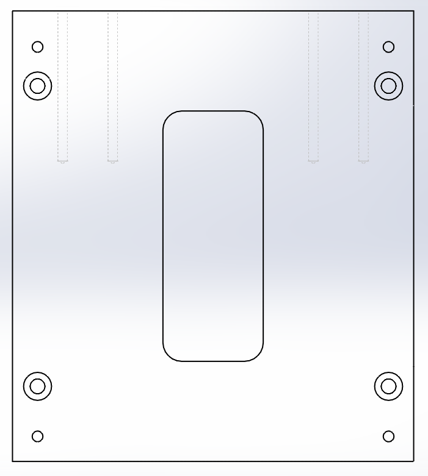
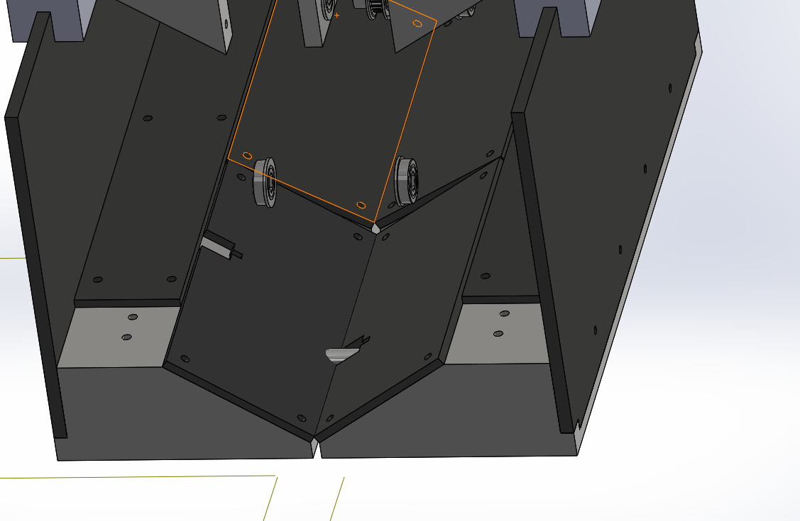
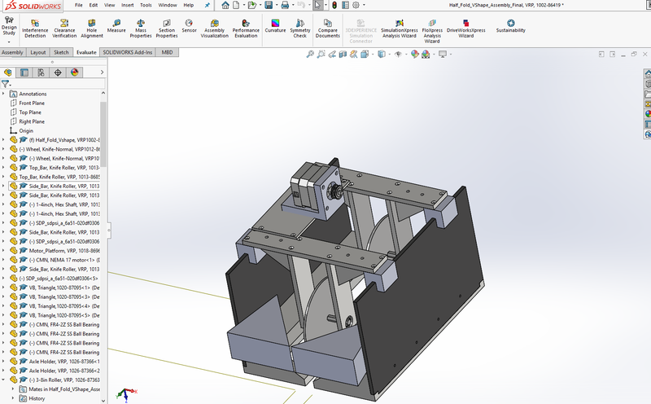
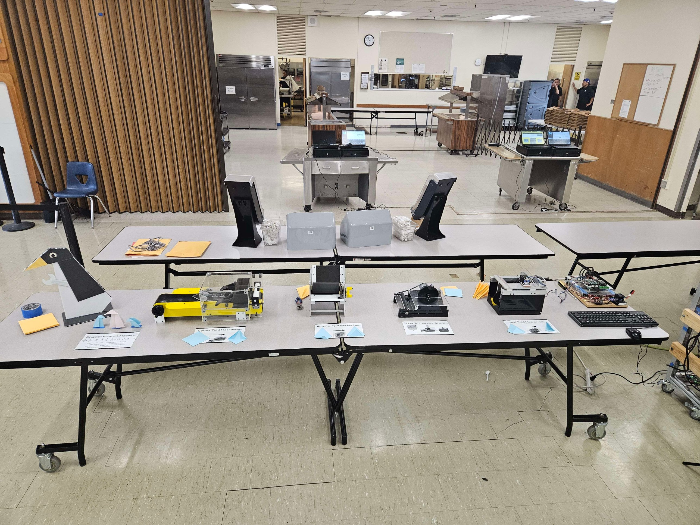
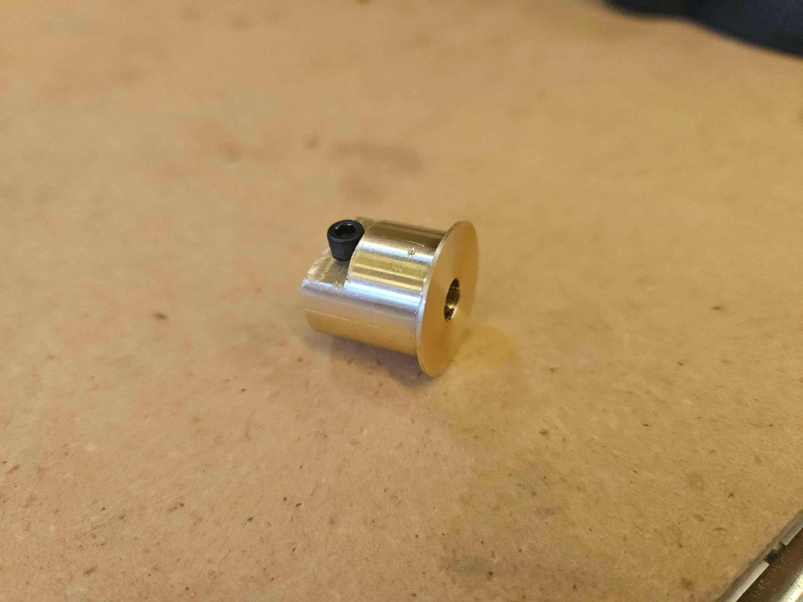

Modular roller-and-gearbox station built by a four-person DPEA team to automate sequential folds of an origami penguin.
Organization
Dos Pueblos Engineering Academy
Team
4 Students, 1 Faculty Mentor
My Role
Lead — Half-Fold Mechanism
Result
3 Connected Prototypes (3 Folds)
// 90° Miter Gearbox & Roller Feed Diagnostic
Bevel Gear Mesh SideCORRECTED (+X MESH)
Roller Nip DirectionFORWARD INTO CREASE
Transmission Ratio1 : 1 (90° Miter Drive)
Shaft & Pulley FitFlatted Round + D-Bore
Completed half-fold mechanism, overhead view.Half-fold module assembled and wired on the workbench.
After early monolithic machine concepts proved too difficult to test in parallel, our four-person team divided the origami penguin sequence into modular stations. I owned the half-fold module end to end—SolidWorks modeling, tolerance stack-up, manual lathe/mill fabrication, microcontroller sequencing, and root-cause debugging—delivering three connected prototypes that executed the first three sequential folds.
Development Timeline & Iteration Log
Foundation Skills & Hardware Teardown
LOG 01 // AUG – SEP 2023
Qualified on vertical mill power-feeds and Hardinge lathe collet stops, built a shop tool-wall French cleat warm-up project, and tore down a salvaged office printer to study sheet-paper roller friction, timing belts, and anti-jam gear trains.

Hardinge lathe setup during shop qualification.Mill power-feed control box, auto-feed training.

Custom-machined collet stop assembly.

Shop tool-wall French cleat, CAD model.
Modular Architecture & Miter Gearbox Design
LOG 02 // OCT – DEC 2023
Flat folding plates failed to overcome natural paper curvature without positive roller nip, prompting our pivot to modular stations. Across three carriage iterations, I designed a custom 90° miter gearbox with our faculty mentor to convert vertical drive rotation into horizontal counter-rotation above the paper path.
Half-fold mechanism, early SolidWorks assembly.Custom 90° miter gearbox, CAD assembly.
CAD Finalization & Digital Fabrication
LOG 03 // JAN – MAR 2024
Nested laser-cut acrylic DXF profiles onto a single sheet, verified shifted STL bracket hole centers with a physical cardboard template before re-printing, and replaced an inconsistent hex drive shaft with a precision flatted round shaft and matched 3D-printed D-bore timing pulleys.
Laser-cut acrylic parts verified against DXF print.Correcting mounting hole locations on the mill.

Roller and timing-pulley subassembly, CAD.

Acrylic mounting plate, dimensioned drawing.
Precision Machining & Fixture Work
LOG 04 // FEB – APR 2024
Turned concentric brass roller inserts on the Hardinge lathe, cross-drilled shafts in V-block mill fixtures, resolved a binding keyway broach by re-drilling an undersized pilot bore, turned passive Delrin rollers, and hand-filed extruded aluminum L-stock inside corners square so the motor mounted flush.
Lathe-turned brass roller insert.Machined aluminum housing and bearing bore.

Bearing mount retention detail, CAD.Delrin passive roller assembly, CAD.Motor mount bracket, CAD model.
Assembly & Reversed-Gearbox Root-Cause Analysis
LOG 05 // ROOT-CAUSE DEBUG (APR – JUN 2024)
After bridging an oversized belt order with pitch-matched shop belts, our May bench test spun cleanly—but ejected paper backward. Kinematic tracing revealed the driven bevel gear was mounted on the opposite side of the pinion mesh; machining a redesigned output shaft and installing corrected belts restored positive paper feed and creasing.
Final half-fold mechanism, SolidWorks assembly.

Completed assembly side elevation, CAD.
Cross-Module Integration & Public Showcase
LOG 06 // LATE MAY – JUN 2024
Built a magnetic coupling interface linking my teammate’s paper-transfer stage into my half-fold inlet, slotted baseplates and machined brass inserts to align shared datum heights, and demonstrated all three connected prototypes live at the June DPEA showcase.
Paper transfer and half-fold modules coupled on the demo table.Four-student capstone team at the year-end showcase.
Outcomes & Engineering Takeaways
Verify kinematics on real hardware: A single mirrored gear placement in CAD inverted roller feed direction—bench testing caught what visual CAD checks missed.
Interface control is systems engineering: Shared datum heights and magnetic coupling tolerances enabled reliable multi-student module integration.
Design for assembly & vendor checks: Accessible set-screw flats and pre-order belt pitch verification protect schedule margin.
SolidWorks Assemblies & Prints
90° Miter Gearbox Design
Hardinge Lathe & Manual Mill
Laser Cutting (DXF)
FDM 3D Printing
Root-Cause Analysis

Full four-module system lineup at the DPEA engineering showcase.
Build & Fabrication Archive
Salvaged printer teardown, roller and gear study.Salvaged printer teardown, drive components.Laser-cut parts checked against reference print.Laser-cut parts, machinist-square check.Roller subassembly, CAD detail.

Brass roller insert, alternate angle.Half-fold mechanism module at the showcase.